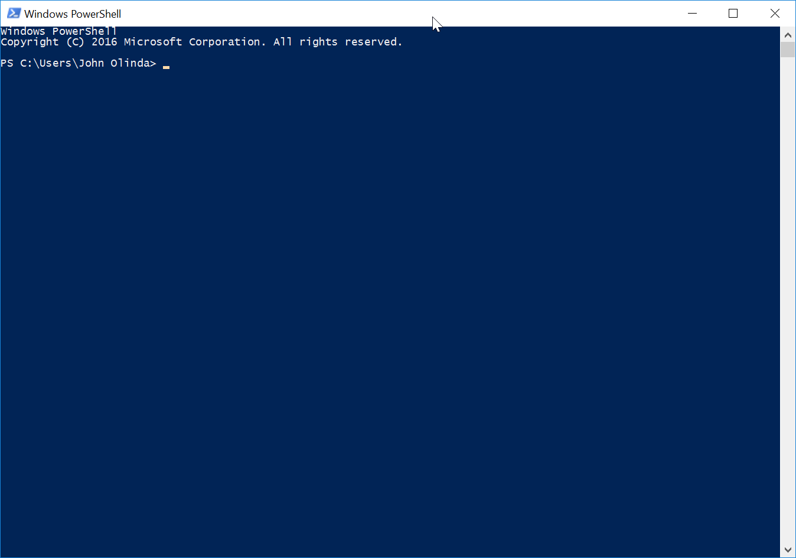

Most of the time we are using computers and other electronic devices, we are using what is known as a graphical user interface, or GUI. These interfaces are a layer between the user - you - and the machine. Before graphical user interfaces were common, most machines were run using the command line. All three major operating systems - Linux, Windows, and macOS - have a command line, even though you don't have to use them. We are going to practice using PowerShell and Bash. If you are using a Mac, you will need to borrow a Windows computer to complete this assignment. We will use our PocketCHIPs for the Bash practice.
This is a much longer lesson, so don't get frustrated if it takes you longer than you think it should.
You must use a Windows computer for this part of the exercise, so
please let Mr. Olinda know if you need to borrow a school
computer. Open the Start Menu and search for Windows
PowerShell. It should be the first result, but make sure
you do not choose any options ending in ISE. You should see a
window that looks like this:

Yours should show your user name instead of "John Olinda,"
but other than that it should appear identical. I'll refer to
the "prompt" throughout this lesson and throughout the course.
The PowerShell prompt ends in the > symbol and indicates
that you can type commands. Sometimes I will ask you to clear
your terminal by typing clear and pressing
Enter. This will erase the content of the command line, but it
will not undo previous commands.
This command is an abbreviation for "print working directory.
This command shows you what directory (folder) you're in,
which can be helpful if you are lost. Before you do anything
else, just type pwd at the prompt and press
Enter. Do this three times.
Raise your hand and have Mr. Olinda verify this checkpoint.
This command is an abbreviation for "change directory." It allows you to move from one directory (folder) to another in the command line. It can also reset your working directory to your home directory, which can be much faster than changing directories one level at a time.
Type cd and press Enter. Notice that nothing
changed. This is because you just told the computer to change
to the current directory.
Type cd Downloads and press Enter. Check to see
if your prompt now includes the Downloads folder just before
the > symbol. Now, any commands you execute will run in
this directory (folder) instead of your home directory.
Type cd .. and press Enter. Check to see what
your current working directory is. It should be your home
directory. If you're not sure, just type pwd and
press Enter to check. If you went down another directory, you
could type cd ../.. to go back up twice with one
command. We will practice this in the next checkpoint.
Type cd Mu and press Tab. PowerShell should
fill in the missing letters and show cd .\Music\
instead. Now press Enter. When you're using the command line,
you can press Tab to autocomplete the command, directory, or
file that you are working on instead of typing the whole
command.
Next, type cd ~ and notice that you're back in
your home directory.
Raise your hand and have Mr. Olinda verify this checkpoint.
This command creates a new directory inside your working
directory. You should be in your home directory. If not, type
cd ~ and press Enter to go there. Then type mkdir
test and press Enter to create a directory called
"test" inside your home directory. Then type cd test
and press Enter to go down into the directory you just
created.
Type mkdir anotherTest and press Enter to
create another directory inside the "test" directory. Then
type cd anotherTest and press Enter to go down
into this new directory.
Raise your hand and have Mr. Olinda verify this checkpoint.
This command lists the files and directories inside the
current working directory. Type cd ~ and press
Enter to go back to your home directory. Then type ls
and press Enter to see what's inside the directory.
Raise your hand and have Mr. Olinda verify this checkpoint.
This command removes directories. Type cd ~ and
press Enter to return to your home directory. Press Windows-E
and go to your home directory so you can see the changes you
make in PowerShell reflected in Windows Explorer. Then
navigate down to the "test" directory. Type rmdir
anotherTest and press Enter to delete the
"anotherTest" directory and then use ls to make
sure it has been deleted. Go back to your home directory and
delete the "test" directory. Use ls to make sure
you have removed it. When you check your home directory in
Windows Explorer you should see that both directories are
gone.
Now, type mkdir -p test/anotherTest and press
Enter. The -p is what we call a flag and it
allows us to modify commands to do something slightly
different. In this case, the -p flag allows us
to create two directories, one inside the other, at the same
time. Now type rmdir test and see what happens.
Raise your hand and have Mr. Olinda verify this checkpoint.
These two commands allow you to quickly switch between
different directories. It works a little differently in
PowerShell than it will in Bash.
First, type mkdir -p test/anotherTest/yetAnotherTest
and press Enter. Then type pushd
test/anotherTest/yetAnotherTest and see what happens.
Confirm that you're in the "yetAnotherTest" directory with pwd.
Then type popd and press Enter. Now where are
you? Confirm this with pwd.
Use ls and pushd to move to
another directory and then use popd to move
back. Try this at least three more times using different
directories.
Raise your hand and have Mr. Olinda verify this checkpoint.
This command allows you to create new files. First, use cd
to move to the "yetAnotherTest" directory. Once you get there,
type New-Item test.txt and press Enter. Confirm
you created a new file with ls.
Then go back to your home directory using cd
and type New-Item
test/anotherTest/yetAnotherTest/hello.txt and press
Enter. Then confirm you created a new file by typing ls
test/anotherTest/yetAnotherTest/ and pressing Enter.
You just created a file in a directory below your current
working directory without actually moving there. Then you
listed the contents of that directory without moving.
Raise your hand and have Mr. Olinda verify this checkpoint.
This command allows you to copy files and directories from one place to another as well as within the same directory. Files can be copied exactly or renamed when copied.
Move to the "yetAnotherTest" directory. Type cp
hello.txt howdy.txt and press Enter. Then use ls
to see if you now have three files - test.txt, hello.txt, and
howdy.txt - in the directory. You just copied the file and
renamed it at the same time.
Type mkdir pleaseStop and press Enter. Then
type cp hello.txt pleaseStop/ and press Enter.
Now when you use ls you should see a new
directory inside "yetAnotherTest".
Type cp -r pleaseStop really and press Enter.
Then use ls to make sure that you can see the
"really" directory. You just copied a directory and its
contents to a new directory. The -r flag stands
for "recurse" which affects the directory and all of its
contents.
Raise your hand and have Mr. Olinda verify this checkpoint.
This command is similar to cp except that
instead of copying the file, it moves the file to a new
location. However, just like cp, mv
can also rename files at the same time. In fact, most of the
time you will use this command to rename files, not actually
move them to a new place.
Make sure you are in the "yetAnotherTest" directory and type
mv test.txt whenWillThisEnd.txt and press Enter.
Then use ls to confirm that test.txt is now
called whenWillThisEnd.txt instead.
Now type mv really yesReally and press Enter.
You can use ls to make sure you've renamed the
directory correctly.
Now use mv to rename whenWillThisEnd.txt and
"yesReally" back to their original names.
Raise your hand and have Mr. Olinda verify this checkpoint.
This command is used to display the contents of a text file, especially files that are too long to fit into your terminal window.
Download loremIpsum.txt and save
it to your Downloads folder. Then use cp to
create a copy in the "yetAnotherTest" directory.
Then type more loremIpsum.txt and notice that
the whole file is displayed in your terminal window. If the
file was too long you could use the space bar to display the
next section until you had seen the whole file. This is called
paging.
Raise your hand and have Mr. Olinda verify this checkpoint.
Unlike the last command, this one streams the file to your terminal without any paging. But you can also stream multiple files to your terminal. First, open "yetAnotherTest" in Windows Explorer and add some text to each text file besides loremIpsum.txt using your text editor. Save each file and then move on.
Type cat loremIpsum.txt and press Enter.
Type cat loremIpsum.txt hello.txt test.txt and
press Enter. What happened? Try just typing cat
and then pressing Enter and entering the files individually.
Then try the command with the text files in a different order.
Can you stream the same file more than once in the same
command? What happens if the output is too long for your
terminal window?
Raise your hand and have Mr. Olinda verify this checkpoint.
Now we're going to clean up our files and directories from
this lesson using the rm and rmdir
commands.
Make sure you're in the "yetAnotherTest" directory. Then type
rm loremIpsum.txt and press Enter. Use ls
to see if the file is gone. Then use rm to delete all the
other files in the directory.
Now try to use rmdir to delete the "pleaseStop"
and "really" directories. Does it work? In Bash you will get
an error, but in PowerShell you are able to decide what to do
with directories that aren't empty.
Now use cd to go to your home directory. Then
type rm -r test in order to delete the whole
directory, including its contents.
Both commands can delete directories and files, but which one
do you use to delete files in the working directory? You
should always use rm and rmdir
very carefully since it's easy to damage your system by
accidentally deleting files.
Raise your hand and have Mr. Olinda verify this checkpoint.
This command allows you to close the terminal. Type exit
and press Enter to close the terminal.
Raise your hand and have Mr. Olinda verify this checkpoint.
You must use a PocketCHIP for this part of the exercise, so
please ask for yours. Open the Terminal. You should see a black
screen that says chip@chip:~$ and has a blinking
cursor. I'll refer to the "prompt" throughout this lesson and
throughout the course. The Bash prompt ends in the $ symbol and
indicates that you can type commands. Sometimes I will ask you to
clear your terminal by typing clear and pressing
Enter. This will erase the content of the command line, but it
will not undo previous commands.
This command is an abbreviation for "print working directory.
This command shows you what directory (folder) you're in, which
can be helpful if you are lost. Before you do anything else, just
type pwd at the prompt and press Enter. Do this thre
Raise your hand and have Mr. Olinda verify this checkpoint.
This command is an abbreviation for "change directory." It allows you to move from one directory (folder) to another in the command line. It can also reset your working directory to your home directory, which can be much faster than changing directories one level at a time.
Type cd and press Enter. Notice that nothing
changed. This is because you just told the computer to change to
the current directory.
Type cd Downloads and press Enter. Check to see if
your prompt now includes the Downloads folder just before the $
symbol. Now, any commands you execute will run in this directory
(folder) instead of your home directory.
Type cd .. and press Enter. Check to see what your
current working directory is. It should be your home directory. If
you're not sure, just type pwd and press Enter to
check. If you went down another directory, you could type cd
../.. to go back up twice with one command. We will
practice this in the next checkpoint.
Type cd Mu and press Tab. Bash should fill in the
missing letters and show cd Music/ instead. Now
press Enter. When you're using the command line, you can press Tab
to autocomplete the command, directory, or file that you are
working on instead of typing the whole
Next, type cd ~ and notice that you're back in your
home directory.
Raise your hand and have Mr. Olinda verify this checkpoint.
This command creates a new directory inside your working
directory. You should be in your home directory. If not, type cd
~ and press Enter to go there. Then type mkdir
test and press Enter to create a directory called "test"
inside your home directory. Then type cd test and
press Enter to go down into the directory you just created.
Type mkdir anotherTest and press Enter to create
another directory inside the "test" directory. Then type cd
anotherTest and press Enter to go down into this new
directory.
Raise your hand and have Mr. Olinda verify this checkpoint.
This command lists the files and directories inside the current
working directory. Type cd ~ and press Enter to go
back to your home directory. Then type ls and press
Enter to see what's inside the directory.
Raise your hand and have Mr. Olinda verify this checkpoint.
This command removes directories. Type cd ~ and
press Enter to return to your home directory. Then navigate down
to the "test" directory. Type rmdir anotherTest and
press Enter to delete the "anotherTest" directory and then use ls
to make sure it has been deleted. Go back to your home directory
and delete the "test" directory. Use ls to make sure
you have removed it. When you check your home directory in the
file browser you should see that both directories are gone.
Now, type mkdir -p test/anotherTest and press
Enter. The -p is what we call a flag and it allows
us to modify commands to do something slightly different. In this
case, the -p flag allows us to create two
directories, one inside the other, at the same time. Now type rmdir
test and see what happens.
Raise your hand and have Mr. Olinda verify this checkpoint.
These two commands allow you to quickly switch between different
directories. It works a little differently in Bash than in
PowerShell.
First, type mkdir -p test/anotherTest/yetAnotherTest
and press Enter. Then type pushd
test/anotherTest/yetAnotherTest and see what happens.
Confirm that you're in the "yetAnotherTest" directory with pwd.
Then type popd and press Enter. Now where are you?
Confirm this with pwd.
Use ls and pushd to move to another
directory and then use popd to move back. Try this
at least three more times using different directories.
Now, type cd ~ and press Enter. Then type pushd
test/anotherTest/yetAnotherTest and press Enter. Navigate
to any other directory besides "test" and then type pushd
and press Enter.
When you run a command all by itself, you're running it without
any arguments. What happened when you ran pushd
without any arguments?
Raise your hand and have Mr. Olinda verify this checkpoint.
This command allows you to create new files. First, use cd
to move to the "yetAnotherTest" directory. Once you get there,
type touch test.txt and press Enter. Confirm you
created a new file with ls.
Then go back to your home directory using cd and
type touch test/anotherTest/yetAnotherTest/hello.txt
and press Enter. Then confirm you created a new file by typing ls
test/anotherTest/yetAnotherTest/ and pressing Enter. You
just created a file in a directory below your current working
directory without actually moving there. Then you listed the
contents of that directory without moving.
Raise your hand and have Mr. Olinda verify this checkpoint.
This command allows you to copy files and directories from one place to another as well as within the same directory. Files can be copied exactly or renamed when copied.
Move to the "yetAnotherTest" directory. Type cp hello.txt
howdy.txt and press Enter. Then use ls to
see if you now have three files - test.txt, hello.txt, and
howdy.txt - in the directory. You just copied the file and renamed
it at the same time.
Type mkdir pleaseStop and press Enter. Then type cp
hello.txt pleaseStop/ and press Enter. Now when you use ls
you should see a new directory inside "yetAnotherTest".
Type cp -r pleaseStop really and press Enter. Then
use ls to make sure that you can see the "really"
directory. You just copied a directory and its contents to a new
directory. The -r flag stands for "recurse" which
affects the directory and all of its contents.
Raise your hand and have Mr. Olinda verify this checkpoint.
This command is similar to cp except that instead
of copying the file, it moves the file to a new location. However,
just like cp, mv can also rename files
at the same time. In fact, most of the time you will use this
command to rename files, not actually move them to a new place.
Make sure you are in the "yetAnotherTest" directory and type mv
test.txt whenWillThisEnd.txt and press Enter. Then use ls
to confirm that test.txt is now called whenWillThisEnd.txt
instead.
Now type mv really yesReally and press Enter. You
can use ls to make sure you've renamed the directory
correctly.
Now use mv to rename whenWillThisEnd.txt and
"yesReally" back to their original names.
Raise your hand and have Mr. Olinda verify this checkpoint.
This command is used to display the contents of a text file, especially files that are too long to fit into your terminal window.
Use cd to move to the "yetAnotherTest" directory. Then type curl
-O and the URL (link) of the
loremIpsum.txt file to download the file to the working
directory.
Then type less loremIpsum.txt and notice that the
whole file is too large to display in your terminal window. Use
the space bar to display the next section until you have seen the
whole file. This is called paging.
Raise your hand and have Mr. Olinda verify this checkpoint.
Unlike the last command, this one streams the file to your terminal without any paging. But you can also stream multiple files to your terminal. First, press the Home button and open "yetAnotherTest" in the Browse Files application and add some text to each text file besides loremIpsum.txt using your text editor. Save each file and then move on.
Type cat loremIpsum.txt and press Enter.
Type cat loremIpsum.txt hello.txt test.txt and
press Enter. Then try the command with the text files in a
different order.
Can you stream the same file more than once in the same command? What happens if the output is too long for your terminal window?
Raise your hand and have Mr. Olinda verify this checkpoint.
Now we're going to clean up our files and directories from this
lesson using the rm and rmdir
commands.
Make sure you're in the "yetAnotherTest" directory. Then type rm
loremIpsum.txt and press Enter. Use ls to
see if the file is gone. Then use rm to delete all the other files
in the directory.
Now try to use rmdir to delete the "pleaseStop" and
"really" directories. Does it work? In Bash you will get an error,
but in PowerShell you are able to decide what to do with
directories that aren't empty.
Now use cd to go to your home directory. Then type
rm -rf test in order to delete the whole directory,
including its contents. The -f flag means "force"
which deletes the directory even if there are things inside it.
Both commands can delete directories and files, but which one do
you use to delete files in the working directory? You should
always use rm and rmdir very carefully
since it's easy to damage your system by accidentally deleting
files.
Raise your hand and have Mr. Olinda verify this checkpoint.
This command allows you to close the terminal. Type exit
and press Enter to close the terminal.
Raise your hand and have Mr. Olinda verify this checkpoint.
Turn in your checkpoint sheet to the assignment basket once it is completely signed. You may now work on stretch projects.